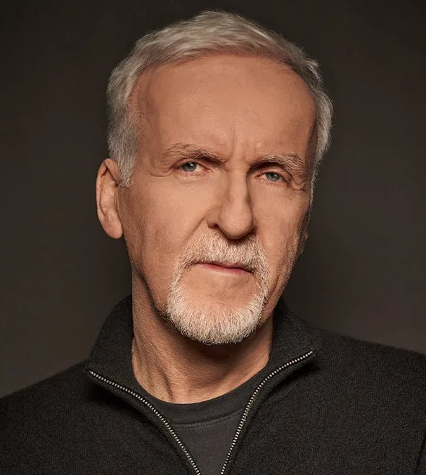
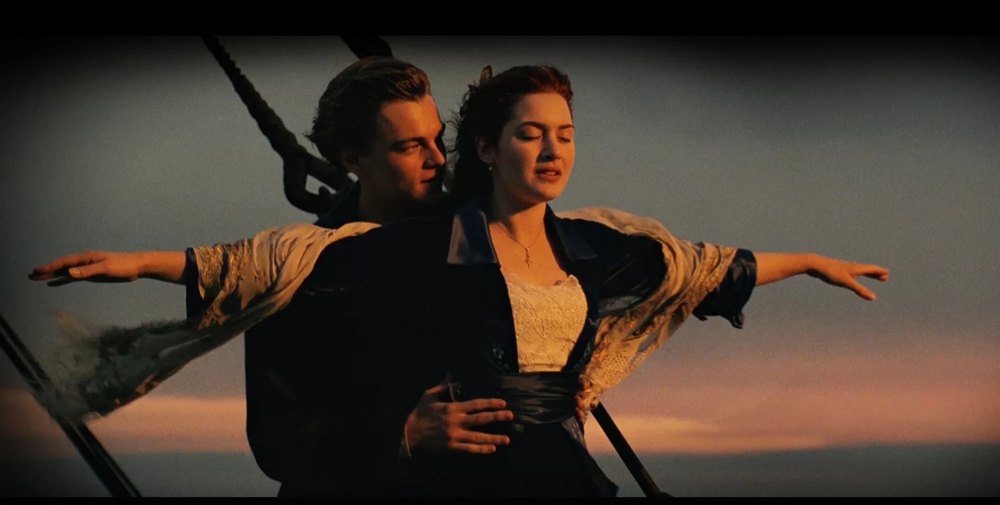
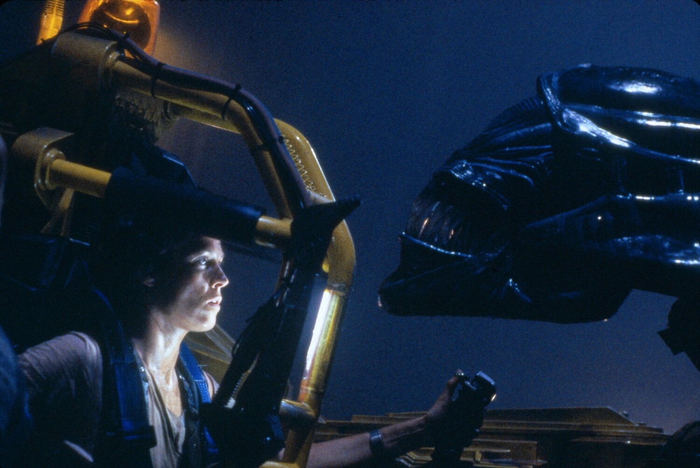
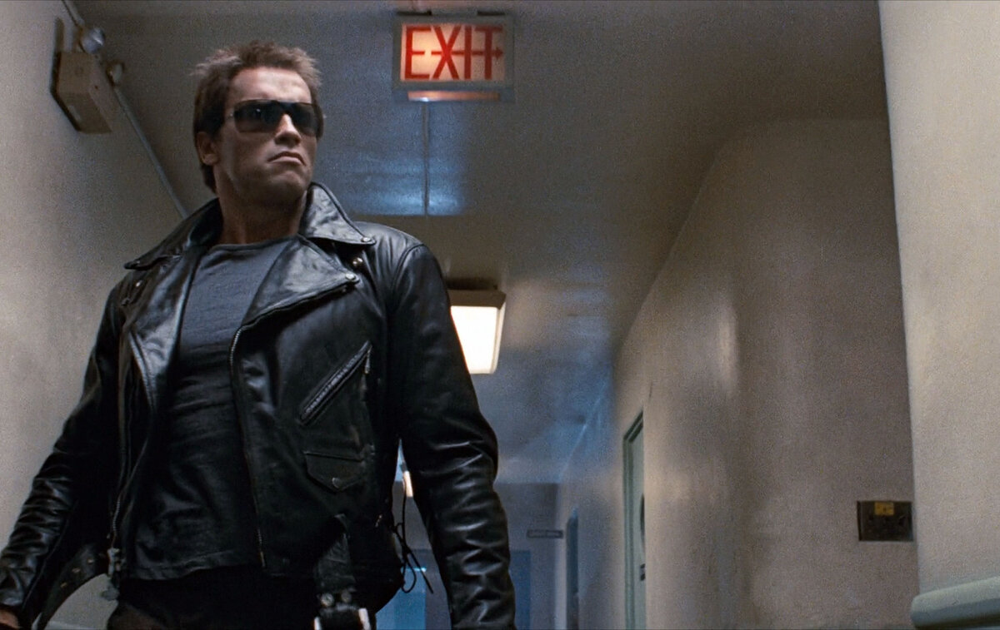
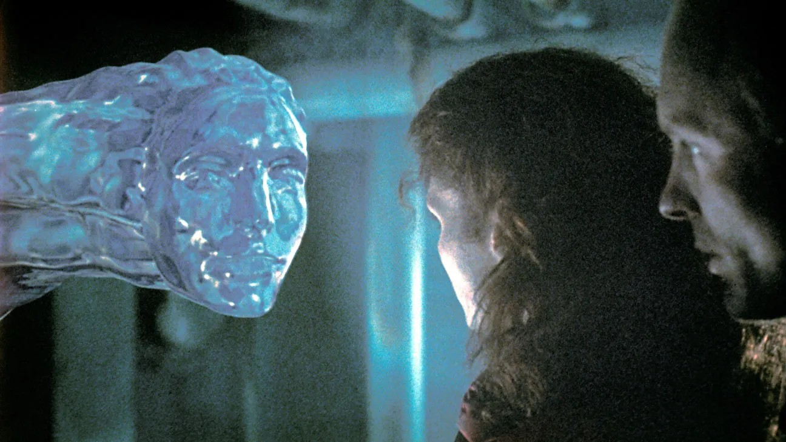
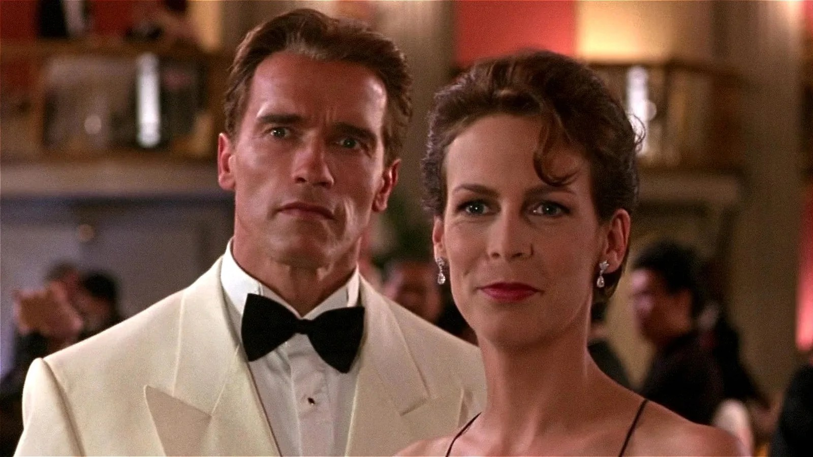

Джеймс Кэмерон
16.08.1954
Онтарио, Канада
Джеймс Кэмерон родился в 1954 году в Канаде в семье инженера-электрика и художницы-медсестры.
У него есть три брата и сестры.
Он переехал в США в 17 лет, изучал физику в колледже, но бросил учёбу и работал водителем грузовика.
Кэмерон был женат пять раз, в том числе на режиссёре Кэтрин Бигелоу и актрисе Линде Хэмилтон;
с 2000 года он состоит в браке с актрисой Сьюзи Эмис, у него пятеро детей.
Кэмерон известен как режиссёр, постоянно раздвигающий границы технологий в кино, особенно в области спецэффектов и 3D.
Его любимые жанры — научная фантастика, боевик и эпическая драма, причём он часто смешивает их, как это было в его фильмах-катастрофах.
Ключевые темы его картин — отношения человека и технологии, а также проблемы окружающей среды.
Известные фильмы

Титаник
1997 год

Чужие
1986 год
Аватар
2009 год

Терминатор
2009 год

Бездна
1989 год

Правдивая ложь
1994 год
Награды

Премия «Оскар»
3 победы
4 номинации

Премия «Золотой глобус»
2 победы
2 номинации